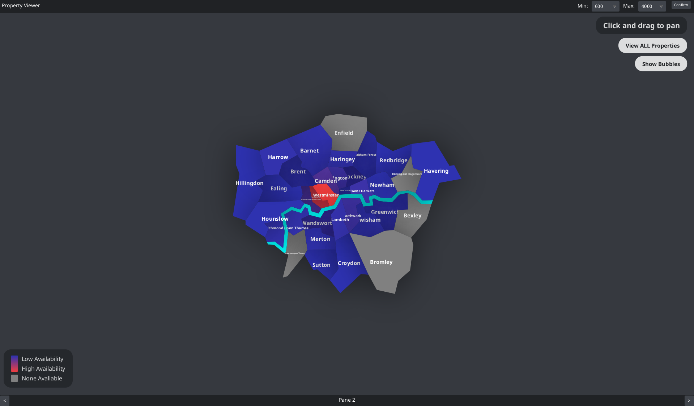

JavaFX Property Marketplace & Rental Analytics Platform

Property Viewer is a JavaFX desktop application for exploring, analysing and booking temporary rental properties across London.
The application combines property discovery, interactive map visualisation, booking functionality and rental analytics within a multi-pane graphical interface.
Users can define a rental price range and booking dates before exploring matching properties across London. The application then updates its property data, map visualisations and statistics to reflect the selected search criteria.
The system is built using Java, JavaFX, FXML and structured Airbnb datasets loaded from CSV files.
Users can select minimum and maximum rental prices alongside start and end dates before exploring available properties. Invalid price ranges and booking dates are automatically detected.
Properties can be explored through geographical London borough visualisations, allowing users to navigate rental availability spatially.
The application supports both geographical and bubble-style map visualisations. Users can switch dynamically between the two representations.
Users can inspect property listings directly from the map interface and view relevant information about available rentals.
Authenticated users can select available properties, review booking details and reserve a property for their selected stay.
The application generates multiple categories of statistics covering pricing, reviews, borough information, property availability and amenities.
Property Viewer separates major areas of the application into dedicated JavaFX controllers and interface components.
The main interface uses a central pane which changes depending on the current stage of the application. This allows users to move between the welcome interface, map visualisation, statistics and booking screens while keeping the surrounding navigation consistent.
FXML files define the structure of the graphical interfaces while Java controller classes manage user interaction, validation, navigation and data updates.
Before navigating the rental marketplace, users select a minimum price, maximum price, start date and end date.
The application validates the selected information before enabling navigation. Invalid price ranges, reversed booking dates and dates that are not valid for future bookings generate appropriate error messages.
Once a valid price range is confirmed, the property statistics and map visualisations are refreshed using the newly selected range.
Property Viewer includes two different approaches to visualising rental information across London.
Displays London boroughs using a geographical map structure, allowing property data to be explored according to physical location.
Provides an alternative circle-based representation of the property data and can dynamically reposition its visual elements.
Colour gradients are used within the map interface to communicate differences across the displayed data. Both map implementations reload when the selected rental price range changes.
Properties selected for booking are displayed inside an observable JavaFX table.
Selecting a listing displays information including the property name, number of beds, bathrooms, area, selected booking dates, property image and the total number of nights.
The total cost of the stay is calculated dynamically using the selected property's nightly price and the number of nights in the booking period.
Booking actions are tied to the current user account. Users without an account are prevented from reserving properties, while existing bookings are checked before a new reservation is accepted.
The application includes a dedicated statistics interface that analyses the currently filtered property datasets.
Users can switch between several categories of rental analytics.
Includes information such as average reviews, total available properties, property types, availability and the most and least expensive London boroughs.
Analyses review scores across areas such as cleanliness, communication, check-in, location and overall rating.
Produces location-focused insights such as the borough with the most properties, Central London listing totals and property information across boroughs.
Analyses property characteristics including bathrooms, bedrooms, beds, gardens, ovens and total amenity counts.
Property data is loaded from multiple London Airbnb CSV datasets using OpenCSV.
Each CSV row is transformed into a structured Java listing object before being used throughout the application.
Raw values are converted into appropriate Java data types, including prices, coordinates, URLs, review scores, availability, bedroom and bathroom counts and lists of property amenities.
Separate listing models are used for the different dataset formats, allowing the application to work with both older and newer rental data.
Changes to the selected price range affect multiple parts of the application. Map views and statistics therefore need to reload against the same filtered property data to keep the interface consistent.
Date selections, property prices and booking actions require validation before the user can continue. The application uses validation logic and JavaFX alerts to communicate problems before invalid actions are processed.
Airbnb CSV data contains several different data formats. Dedicated conversion methods transform raw strings into numerical values, money values, URLs and amenity collections before creating usable Java objects.
The application contains several distinct interfaces for searching, mapping, analytics and booking. JavaFX controllers, FXML files and pane switching are used to keep these areas separated while still supporting navigation between them.
Property Viewer demonstrates my ability to build a larger object-oriented Java desktop application that combines graphical interfaces, data processing, user interaction and application logic.
The project also demonstrates experience working with JavaFX, FXML-based interfaces, CSV data processing, input validation, filtering, dynamic visualisation, analytics and multi-screen application design.
A demonstration of Property Viewer, showing the JavaFX interface, property exploration features, interactive visualisations and rental functionality.
The source code for Property Viewer is available on GitHub.
View Source Code